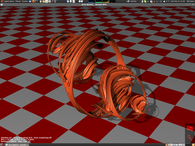
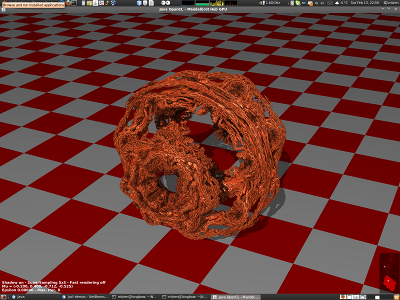
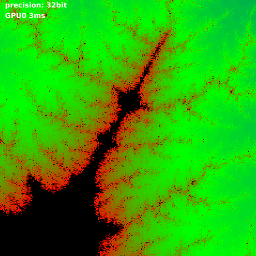

Java OpenCL
JOCL provides an easy to use Java binding for the OpenCL API. GlueGen is used to generate a low level binding directly from the official Khronos C header files. The hand written high level bindings on top of generated code provides a convenient interface and reduces verbosity to a minimum.Features / Project Goals
- high performance, cross platform, high and low level OpenCL bindings
- intuitive API
- seamless interoperability with JOGL
- secure - automatic Exception handling, no resource management in native code etc
- GC friendly - no weak references, finalizers or other cheats
- utility API for Program management, CommandQueue synchronization and more
Screenshots (jocl-demos project)
Realtime-interactive rendering of 4D fractals (Julia Set left, Mandelbrot Set right).


{kind=link}
{kind=link}
Switching precision of floatingpoint calculations made easy (32bit left, 64bit right - very high zoom level).


Performance comparison between Quicksort on CPU and Radixsort on GPU.